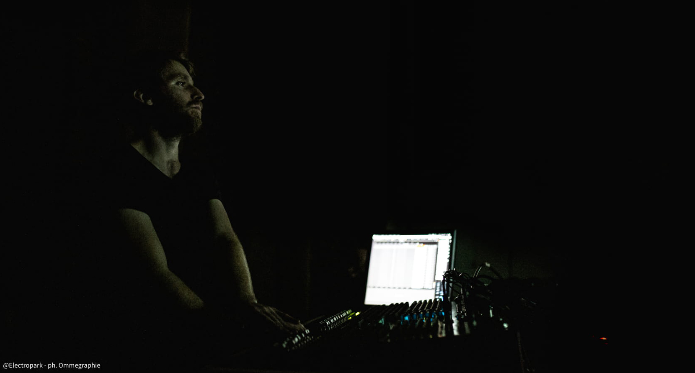

music, live electronics, visuals

Born near Torino (IT) in 1988, Alberto Barberis is active as composer, guitarist, electroacoustic performer, sound engineer and code artist.
From 2017 he is teaching Electronic Music, Programming and Music Technology at the
Conservatorio della Svizzera Italiana of Lugano (CH).
He began playing classical guitar at a young age, studying, among others, with Maurizio Colonna, Giorgio Mirto and Bruno Giuffredi.
He got the Diploma in classical guitar at the Conservatory of Turin (IT) and the Master’s Degree in classical guitar at the Conservatory of Brescia (IT).
Alongside his musical activity, he undertook engineering studies at the
Polytechnic of Turin, that stimulated his interest for mathematical applications in music composition, electronic and computer music.
He studied composition with Giovanni Albini, mathematician and composer. Since 2012 he is the Assistant Artistic Director of
highSCORE New Music Center (international festival of contemporary music) and from 2015 of
OGGIMUSICA.
In 2012 he began an artistic collaboration with electronic musician Alberto Ricca/
Bienoise, taking part in the collective of musicians linked to
FloatingForest Record, label of improvisation and experimental music.
In 2016 he obtained with Honors the Master of Arts in Composition and Theory at the Conservatorio della Svizzera italiana of Lugano (CH), where he studied with Nadir Vassena, Giovanni Verrando, and Sylviane Sapir. In 2019 he also obtained the MAS (Master of Advanced Studies) in Music Composition in the same Conservatory.
Recently he collaborated with several contemporary music ensembles including the Ensemble Recherche (DE), the Eutopia Ensemble (IT), and he took part in many international music festivals, such as OGGIMUSICA (CH), Nachtstrom (CH), Art Test Fest (IT), Maggio Elettrico (IT), AFEKT (ET). Alongside his artistic activity he develops applications and softwares for music creation, education and performance (tiascolto, EARME, Ormè,
SOLO). In 2016 he won the Werkjahr 2017 of the foundation Christoph Delz (Basel - CH), with a research project on the interaction between orchestral instruments and transducers. In his creations he combines acoustic instruments, electronic devices, digital art and programming with a personal 'biological tension'.
Rajan Craveri
visual generative algorithms
Rajan Craveri is a visual artist specialized in the creation of interactive systems for art, and in the generation of images and visuals in real time. He works in the field of live performances and multimedia installations for museums, contemporary art galleries and events. He has taught at the Albertina Academy of Fine Arts in Turin, Milan, Bergamo and Brescia. He studied at the Accademia d'Arte Drammatica Paolo Grassi in Milan and deepened his studies in New York, Porto and Bergen. In 2006, together with the choreographer Serena Zanconato, he founded Micron, a company that operates between dance, visual arts and technology. Currently Rajan Craveri is one of the greatest experts of the library jitter of Max/MSP, both nationally and internationally. He constantly collaborates with choreographers, composers, musicians, dancers, directors, poets for the production of shows and interactive installations. He loves collaboration, performance art and bees.
Copyright ©2019 Alberto Barberis. All rights reserved.
The content of this website is private and contains
confidential and privileged material.
It is accessible only to person or entity to which it is addressed directly by Alberto Barberis.
Any retransmission, dissemination, sharing of the web site material, and/or other actions, is absolutely forbidden.